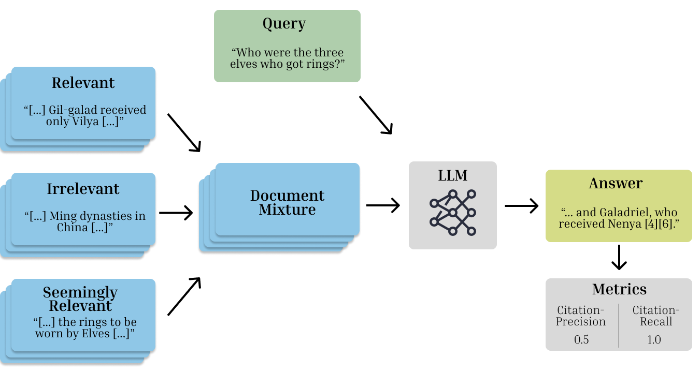

Hey there! I'm a programmer with a strong interest in AI, game development, and renewable energy. Feel free to explore my projects and reach out if something catches your eye.
Experience
Master Thesis
Vitesco Technologies & OTH Regensburg
Title: Evaluating and Fine-Tuning Retrieval-Augmented Language Models to Generate Text With Accurate Citations
My master’s thesis focused on evaluating and fine-tuning large language models (LLMs) for their citation capabilities, which ultimately led to a publication at the KONVENS 2024 conference, held at the University of Vienna.
Read more on this in Publications.
November 2023 - April 2024
Game Developer
Penzkofer and Wittig GbR
Together with my friend and colleague Mathias Wittig, I developed a racing game for Android. What began as a simple 2D project evolved into something much more exciting—a 3D racing game with beautiful low-poly graphics, Bluetooth multiplayer, and a single-player mode where players can compete against AI opponents.
Read more on this in here.
April 2020 - Present
Working Student
Sysgrade GmbH
Responsibilities: Software development in TypeScript and Node.js and Test automation
Company:
Sysgrade provides comprehensive support throughout the entire project lifecycle of eCommerce projects, from the initial concept to the successful launch and beyond.
April 2020 - November 2022
Working Student
IK-T GmbH
Responsibilities: Implementing tools for geo-data visualization with Python and QGIS.
Company: IK-T is a planning and consulting company that offers engineering services required for planning, construction, operation and optimisation in the fixed telecommunications network market segment.
April 2018 - April 2020
Tutor in Media Informatics
OTH Regensburg
Responsibilities: Teaching in Foundations of Web Development (HTML, CSS, JavaScript)
October 2019 - March 2020
Education
Computer Science - Master of Science
Regensburg University of Applied Science
Grade: 1.6
March 2022 - May 2024
Computer Science - Bachelor of Science
Regensburg University of Applied Sciences
Grade: 1.8
March 2018 - March 2022
Skills
Programming Languages & Tools
Python
C#
PyTorch
Unity
TypeScript
JavaScript
Java
NodeJs
Experienced in
Language Model Training & Fine-Tuning
Game Development
Things included in a CS masters degree
(Except the things I have forgotten)
Publications
Evaluating and Fine-Tuning Retrieval-Augmented Language Models to Generate Text With Accurate Citations
Paper: Comming Soon...
Overview:
During my master’s thesis and the time afterward, I extensively worked with Large Language Models (LLMs), particularly in the area of Retrieval-Augmented Generation (RAG).
This work led to a publication presented at the KONVENS (Conference on Natural Language Processing), held at the University of Vienna.
Our work focused on evaluating and improving the citation capabilities of current LLMs in a RAG setting.
Our evaluation approach (see Figure 1) revealed significant differences in the performance of current state-of-the-art LLMs.
Based on this, we released RAGE (Retrieval-Augmented Generation Evaluation), a testing framework for LLMs, evaluating the citation performance of LLMs.

Figure 1: RAGE evaluation process. A mixture of relevant, irrelevant, and semi-relevant documents is provided for a given query. The LLM is prompted with the query and the document mixture. Citation quality metrics are then calculated based on the LLM response.
Having a performance metric measuring citation capabilities, we were then able to use these metrics to improve the citation quality of LLMs through further fine-tuning.
Figure 1 shows our fine-tuning approach.
In the first step, we align the answers of LLMs to a short and concise format that includes citations.
In the second step, we use the RAGE citation performance metrics to directly improve citation quality through Proximal Policy Optimization (PPO).
With this method, we were able to improve the citation capabilities of smaller open-weight models like LLaMA 2 and Mistral 7B to levels close to much larger models like GPT-3.5.
JARG is a beloved project that my good friend Mathias Wittig and I have been developing together for the past few years. It all started in the spring of 2020, during the dark days of the pandemic, when there wasn't much else to do. Fast forward to today, it’s published and it's – well – still a hobby project. We’re patiently waiting for the world to realize that the next Mario Kart is already out there.
But no regrets – We’ve had (and are still having) a lot of fun developing it. Over the years, we’ve come to love the finer details of game design and curse the challenges of multiplayer synchronization. We’ve entertained a few players already while we wait for that inevitable breakthrough that will bring us wealth and riches.
Feel free to check out the trailer, download the game, and if you enjoy it, rate us with ]4, 6[ ∩ ℕ stars.
PS: Currently available on Android only… Sorry Tim, we’re working on it!